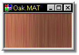
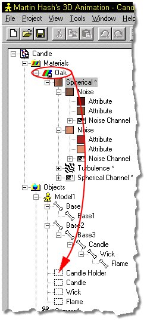
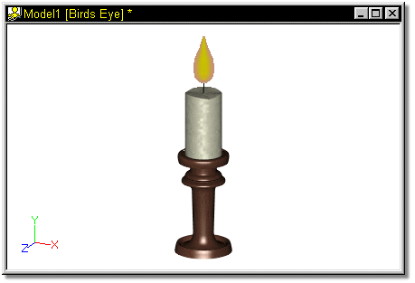

Remember that candle from the Modeling and Bones Quick Starts?
Remember that candle from the Modeling and Bones Quick Starts?

It’s time to add a little texture to it, so load that candle file.
Some of the materials created in the following Quick Start could also be added as an Attribute of the named group rather than creating and applying materials.
The Materials that make up the texture on the Candle model will be
applied to the candle as patch materials, so named groups must be created.
Begin by clicking any control point on the candle holder and pressing the “/” key to Group Connected. Click the Group Name “Untitled” in the Project Workspace, then press the F2 key to Edit the name. Type in “Candle Holder”, then press Enter. Continue by clicking any point on the candle and press the “/” key. Name this group “Candle”. Click any point on the wick, press the “/” key, and name this group “Wick”. Finish by clicking any point on the flame, pressing the “/” key, and naming this group “Flame”.
To create the material for the candle holder, right click the icon in the Project Workspace, and select New Material.
Click the plus (+) next to the name “Material1” to expand the material tree. Right click the Attribute, and select “Change Type To”, then select Spherical”. Click the plus (+) next to the “Spherical” tag to further expand the material tree. Right click the first attribute, select “Change Type To”, then select Noise”. Right click the second attribute and select “Change Type To”, then select “Noise” once again. Right click the “Material1” name and select Save As. Enter “Oak” and press Enter.
Under the first Noise entry, click the first attribute in the list. On the Properties Panel, click the Color selector, then click other. Enter 95, 24, 24 for the Red, Green and Blue values, respectively. Set the Specular Color to White, and enter 100 into both the Specular Intensity and Size fields. Enter 5 for the Ambiance value.
Click the second attribute, and on the Properties Panel, click the color selector. Click other, then enter 130, 89, 66 for the Red, Green, and Blue values. Set the Specular Color to White, and both the Specular Intensity and Size to 100. Enter 5 for the Ambiance value.
Click the first Noise tag, then enter 60, 6000, and 60 for the X, Y, and Z scale, respectively.
Under the second Noise entry, click the first attribute in the list. On the Properties Panel, click the Color selector, then click other. Enter 165, 40, 40 into the Red, Green, and Blue fields, respectively. Set the Specular Color to White, Specular Size to 20, and Specular Intensity to 100. Enter 5 for the Ambiance value.
Click the second attribute, and on the Properties Panel, click the color selector. Click other, then enter 219,147,112 into the Red, Green, and Blues Fields. Set the Specular Color to White, the Specular Size to 20, and the Specular Intensity to 100. Enter 5 for the Ambiance value.
Click the Second Noise tag, then enter 60, 6000, and 60 for the X, Y, and Z scale, respectively.
Right click the Spherical tag and select Add Turbulence from the available list. Select the Turbulence node by clicking on it, and on the Properties Panel, enter 5 for the X Scale, .5 for the Y scale, and 4.5 for the Z scale. Enter 3 into the Amplitude Field.
To finish the material, select the entire material by clicking the Spherical tag, and on the Properties Panel, enter 35, 0, and 10 for the X, Y, and Z Translate fields. For the X, Y, and Z Scale fields, enter 20,0, and 20, enter 6 into the Ring 1 Size field, 15 into the Ring 2 Size field, and 50 into the Blur field.
What you end up with should look similar to figure 1:

To apply the completed material to the model, click the “Oak” material name, and with the mouse button held down, drag the name with the mouse over the named group “Candle Holder”. Use figure 2 for reference if necessary. Release the mouse button. A “Shortcut to Oak” will appear beneath the named group.

To create the Candle material, right click the button in the Project Workspace, and select New Material. Click the plus (+) next to the name “Material1” to expand the material tree. Right click the Material1” name and select Save As. Enter “Candle” and press Enter.
Click the Attribute in the Candle tree, and click the Color selector on the Properties Panel. Click other, then enter 255,255,200 into the Red, Green, and Blue fields. Click OK.
Set the Specular Color to white, Specular Intensity and Size to 100.
Enter 5 for Roughness Height, and 500 for Roughness Scale.
Apply this material to the Candle group by dragging and dropping, similarly to the Candle Holder “Oak” material.
For the Wick, right click the icon in the Project Workspace, and select New Material. Click the plus (+) next to the name “Material1” to expand the material tree. Right click the Material1” name and select Save As. Enter “Wick” and press Enter.
Click the Attribute in the Candle tree, and click the Color selector on the Properties Panel. Select Black.
Apply this material to the Wick group by dragging and dropping.
Finish creating the materials for the Candle with a Flame material. Right click the icon in the Project Workspace, and select New Material. Click the plus (+) next to the name “Material1” to expand the material tree. Right click the Attribute, and select “Change Type To”, then select “Gradient”. Click the plus (+) next to the “Gradient” tag to further expand the material tree.
Click the first attribute, and on the Properties Panel, click the Color selector, then click other, then enter 255, 255, and 0 into the Red, Green, and Blue fields, respectively.
Click the second attribute, and on the Properties Panel, click the color selector. Click other, then enter 255, 128, 64 into the Red, Green, and Blue fields. Set the Ambiance value to 100, and Transparency to 60.
To finish the material, click the Gradient tag, and on the Properties Panel, enter 0 into all start and end position fields, and 75 into the Edge Threshold field. Drag the “Flame” material to the “Flame” group and drop it.
The final model, when rendered, should look similar to figure 3:
